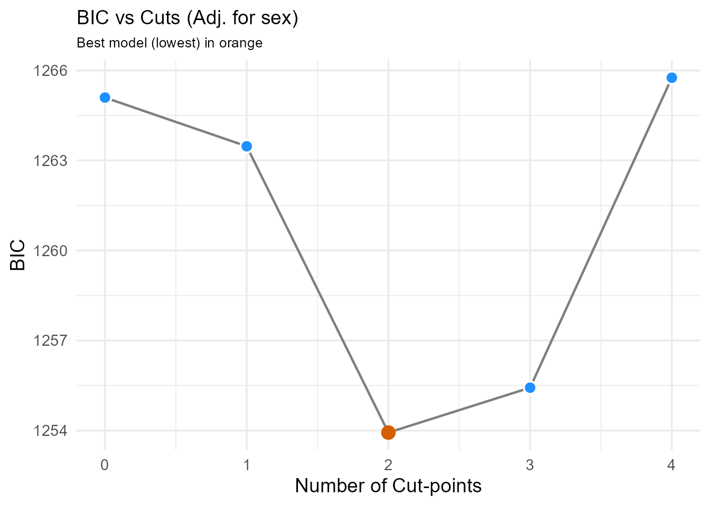
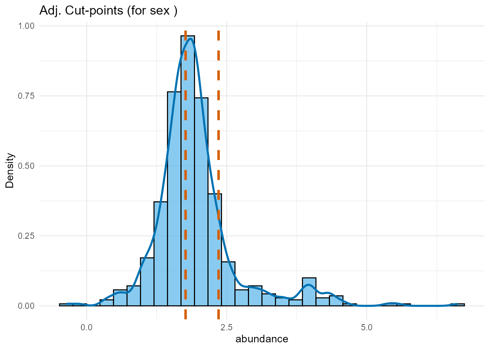

Stratifying Colorectal Cancer Patients by Gut Enterovirus Abundance
Survival Analysis Workflow with OptSurvCutR Demonstrating Covariate Adjustment
Payton Yau
2025-11-24
Source:vignettes/CRC_Virome.Rmd
CRC_Virome.RmdAbout the Package
The OptSurvCutR package provides a
comprehensive, data-driven workflow for survival analysis, specifically
designed for scenarios where a single cut-point is not sufficient. Its
core functionality is to discover and validate one or more optimal
cut-points for continuous variables in time-to-event data. A key feature
is the ability to perform these analyses while adjusting for covariates,
allowing assessment of a biomarker’s independent prognostic value.
This vignette focuses on demonstrating this covariate adjustment feature.
Introduction
This tutorial demonstrates how to use the
OptSurvCutR package to stratify patients
into prognostic groups based on a continuous biomarker, specifically
showing how to adjust for potential confounding variables.
The Scientific Background
The human gut virome, the collection of viruses in the gut, can be
disrupted (dysbiosis) in diseases like colorectal cancer (CRC). We will
analyse gut virome data to determine if the relative abundance of the
genus Enterovirus can predict 5-year overall survival, considering
potential confounders like patient sex. This analysis, inspired by data
from Smyth et
al. (2024), uses OptSurvCutR to identify data-driven
thresholds for Enterovirus abundance both with and without adjustment
for covariates.
Analysis Workflow
This guide covers a complete and robust workflow:
- Setup and Configuration: Preparing the R environment and defining key parameters.
- Data Loading and Preparation: Loading the package’s built-in datasets and preparing them for analysis.
- Optimal Cut-point Discovery (Unadjusted vs. Adjusted):
- Step 3.1: Determine the optimal number of groups (unadjusted and adjusted).
- Step 3.2: Find the cut-point locations (unadjusted and adjusted).
- Cut-point Validation: Assess the stability of the discovered thresholds via bootstrapping.
- Visualisation and Interpretation: Create and interpret Kaplan-Meier curves, forest plots, and other key visualisations.
- Model Diagnostics: Checking the assumptions of the survival model.
1. Setup and Configuration
Defining Parameters
We define the name of the microbe/virus we wish to analyse upfront. Here, we selected Enterovirus - a RNA virus within the Picornaviridae family, known for causing gastroenteritis and other infections. We included the covariates in the adjusted analysis.
# Define the biomarker of interest.
microbe_name_to_analyze <- "Enterovirus"
# Define covariates available in the crc_virome dataset
covariates_to_adjust_for <- c("sex")2. Data Loading and Preparation
We load the pre-cleaned clinical and virome dataset directly from the
OptSurvCutR package. With the updated data format, this is
now a single data frame. We will process it to extract the necessary
columns, parse the survival status, and censor the data at 5 years (60
months) for this analysis.
# Load the single, wide-format data frame from the package.
data("crc_virome", package = "OptSurvCutR")
# --- Prepare the final analysis data frame ---
analysis_data <- crc_virome %>%
# Select and rename key columns
select(
patient_id = sample_id,
time_months,
status_char = status, # Original character status (e.g., "0:LIVING")
abundance = all_of(microbe_name_to_analyze),
all_of(covariates_to_adjust_for) # Include covariates
) %>%
# Apply 5-year (60-month) censoring and parse status
mutate(
# 1. Parse numeric status (0/1) from the character string
status_numeric = as.numeric(substr(status_char, 1, 1)),
# 2. Apply censoring: events after 60 months are set to 'censored' (0)
status_final = ifelse(time_months > 60, 0, status_numeric),
# 3. Cap all follow-up times at 60 months
time_final = pmin(time_months, 60)
) %>%
# Select final columns for analysis
select(
patient_id,
time = time_final,
status = status_final, # Use the new 5-year censored status
abundance,
all_of(covariates_to_adjust_for)
) %>%
# Remove rows with any missing values in essential columns
filter(complete.cases(time, status, abundance, across(all_of(covariates_to_adjust_for))))
# Display the head of the final processed data
head(analysis_data)
#> patient_id time status abundance sex
#> 1 TCGA-3L-AA1B-01 15.616267 0 3.663065 Female
#> 2 TCGA-4N-A93T-01 4.799947 0 1.697278 Male
#> 3 TCGA-4T-AA8H-01 12.657396 0 2.809707 Female
#> 4 TCGA-5M-AAT4-01 1.610941 1 1.688483 Male
#> 5 TCGA-5M-AAT6-01 9.534142 1 2.621937 Female
#> 6 TCGA-5M-AATE-01 39.451622 0 2.378831 Male3. Optimal Cut-point Discovery (Unadjusted vs. Adjusted)
A Note on Reproducibility (seed): Functions
involving the genetic algorithm (method = "genetic") or
bootstrapping (validate_cutpoint) use random processes. We
set the seed argument to ensure results are reproducible.
Step 3.1: Determine the Optimal Number of Cut-points
We first run find_cutpoint_number() without covariates,
then with covariates, to see if adjustment changes the suggested number
of groups. We use BIC and the genetic algorithm (checking if
rgenoud is available).
# --- Unadjusted Analysis ---
# --- Unadjusted Analysis ---
number_result_unadj <- find_cutpoint_number(
data = analysis_data,
predictor = "abundance",
outcome_time = "time",
outcome_event = "status",
method = "genetic",
criterion = "BIC",
max_cuts = 4, # Test 0-3 cuts (4 groups max)
nmin = 0.1, # Min 10% per group
max.generations = 50, # Reduced for vignette speed
pop.size = 50, # Reduced for vignette speed
seed = 42
)
#> num_cuts BIC Delta_BIC BIC_Weight Evidence cuts
#> 0 1258.74 10.54 0.3% Minimal NA
#> 1 1251.79 3.59 10.7% Moderate 2.36
#> 2 1248.21 0.00 64.5% Substantial 1.74, 2.35
#> 3 1250.46 2.25 20.9% Moderate 1.61, 1.74, 2.36
#> 4 1254.05 5.84 3.5% Moderate 1.42, 1.72, 1.86, 2.35
# --- Adjusted Analysis ---
number_result_adj <- find_cutpoint_number(
data = analysis_data,
predictor = "abundance",
outcome_time = "time",
outcome_event = "status",
method = "genetic",
criterion = "BIC",
max_cuts = 4,
nmin = 0.1,
max.generations = 50,
pop.size = 50,
covariates = covariates_to_adjust_for, # ADDED COVARIATES
seed = 43 # Use a different seed
)
#> num_cuts BIC Delta_BIC BIC_Weight Evidence cuts
#> 0 1265.10 11.16 0.3% Minimal NA
#> 1 1263.47 9.54 0.6% Minimal 1.74
#> 2 1253.93 0.00 67.2% Substantial 1.77, 2.35
#> 3 1255.43 1.50 31.8% Substantial 1.61, 1.87, 2.36
#> 4 1265.76 11.82 0.2% Minimal 1.61, 1.72, 1.87, 2.16
plot_num_unadj <- plot(number_result_unadj) +
ggtitle("BIC vs Cuts (Unadj.)") +
theme(plot.title = element_text(size = 14))
plot_num_adj <- plot(number_result_adj) +
ggtitle(paste0(
"BIC vs Cuts (Adj. for ",
paste(covariates_to_adjust_for, collapse = ", "), ")"
)) +
theme(plot.title = element_text(size = 14))
# Show plots sequentially
print(plot_num_unadj)
print(plot_num_adj)
> Interpretation: We compare the BIC plots and optimal number of cuts from both the unadjusted and adjusted analyses. In this example, both might suggest 2 cut-points (3 groups) remain optimal even after adjusting for sex. If the optimal number changed significantly after adjustment, it might suggest the biomarker’s grouping effect is partly confounded. We proceed using the optimal number suggested by the adjusted analysis.Step 3.2: Find the Location of the Cut-points
Now that we have decided to use two cut-points, we use
find_cutpoint() to identify their optimal values based on
the log-rank statistic.
# Determine optimal number for subsequent steps based on unadjusted result
optimal_n_cuts_unadj <- number_result_unadj$optimal_num_cuts # Store unadjusted for comparison
# --- Unadjusted Analysis ---
cutpoint_result_unadj <- find_cutpoint(
data = analysis_data,
predictor = "abundance",
outcome_time = "time",
outcome_event = "status",
method = "genetic",
criterion = "logrank",
num_cuts = optimal_n_cuts_unadj,
nmin = 0.1,
max.generations = 50,
pop.size = 50,
seed = 123
)
print(summary(cutpoint_result_unadj))
#> Group N Events
#> 1 G1 303 64
#> 2 G2 187 18
#> 3 G3 91 28
#> Call: survfit(formula = survival::Surv(time, event) ~ group, data = data)
#>
#> n events median 0.95LCL 0.95UCL
#> group=G1 303 64 NA 54.6 NA
#> group=G2 187 18 NA NA NA
#> group=G3 91 28 44.3 39.0 NA
#> Call:
#> survival::coxph(formula = as.formula(formula_str), data = data)
#>
#> n= 581, number of events= 110
#>
#> coef exp(coef) se(coef) z Pr(>|z|)
#> groupG2 -0.8728 0.4178 0.2669 -3.271 0.00107 **
#> groupG3 0.4039 1.4976 0.2268 1.781 0.07493 .
#> ---
#> Signif. codes: 0 '***' 0.001 '**' 0.01 '*' 0.05 '.' 0.1 ' ' 1
#>
#> exp(coef) exp(-coef) lower .95 upper .95
#> groupG2 0.4178 2.3936 0.2476 0.7049
#> groupG3 1.4976 0.6677 0.9602 2.3358
#>
#> Concordance= 0.591 (se = 0.027 )
#> Likelihood ratio test= 20.66 on 2 df, p=3e-05
#> Wald test = 18.08 on 2 df, p=1e-04
#> Score (logrank) test = 19.69 on 2 df, p=5e-05
#> chisq df p
#> group 4.43 2 0.11
#> GLOBAL 4.43 2 0.11
optimal_cuts_unadj_values <- cutpoint_result_unadj$optimal_cuts
# Determine optimal number for subsequent steps based on ADJUSTED result
optimal_n_cuts_adj <- number_result_adj$optimal_num_cuts
# --- Adjusted Analysis ---
cutpoint_result_adj <- find_cutpoint(
data = analysis_data,
predictor = "abundance",
outcome_time = "time",
outcome_event = "status",
method = "genetic",
criterion = "logrank",
num_cuts = optimal_n_cuts_adj,
nmin = 0.1,
max.generations = 50,
pop.size = 50,
covariates = covariates_to_adjust_for,
seed = 124 # Different seed
)
print(summary(cutpoint_result_adj))
#> Group N Events
#> 1 G1 247 55
#> 2 G2 243 27
#> 3 G3 91 28
#> Call: survfit(formula = survival::Surv(time, event) ~ group, data = data)
#>
#> n events median 0.95LCL 0.95UCL
#> group=G1 247 55 NA 51.5 NA
#> group=G2 243 27 NA NA NA
#> group=G3 91 28 44.3 39.0 NA
#> Call:
#> survival::coxph(formula = as.formula(formula_str), data = data)
#>
#> n= 581, number of events= 110
#>
#> coef exp(coef) se(coef) z Pr(>|z|)
#> groupG2 -0.74083 0.47672 0.23522 -3.149 0.00164 **
#> groupG3 0.36326 1.43801 0.23234 1.563 0.11794
#> sexMale -0.04828 0.95287 0.19123 -0.252 0.80069
#> ---
#> Signif. codes: 0 '***' 0.001 '**' 0.01 '*' 0.05 '.' 0.1 ' ' 1
#>
#> exp(coef) exp(-coef) lower .95 upper .95
#> groupG2 0.4767 2.0977 0.3006 0.7559
#> groupG3 1.4380 0.6954 0.9120 2.2674
#> sexMale 0.9529 1.0495 0.6550 1.3861
#>
#> Concordance= 0.587 (se = 0.029 )
#> Likelihood ratio test= 18.91 on 3 df, p=3e-04
#> Wald test = 17.6 on 3 df, p=5e-04
#> Score (logrank) test = 18.83 on 3 df, p=3e-04
#> chisq df p
#> group 5.227 2 0.073
#> sex 0.491 1 0.483
#> GLOBAL 5.594 3 0.133
optimal_cuts_adj_values <- cutpoint_result_adj$optimal_cuts
# Plot comparison
plot_dist_unadj <- plot(cutpoint_result_unadj,
type = "distribution"
) +
ggtitle("Unadj. Cut-points")
plot_dist_adj <- plot(cutpoint_result_adj,
type = "distribution"
) +
ggtitle(paste(
"Adj. Cut-points (for",
paste(covariates_to_adjust_for, collapse = ", "), ")"
))
# Show plots sequentially
print(plot_dist_unadj)
print(plot_dist_adj)
Interpretation: We compare the optimal cut-point locations found with and without covariate adjustment. If the cut-points shift substantially after adjustment, it suggests the covariates influenced the optimal thresholds. If they remain similar, it strengthens the evidence for the biomarker’s independent grouping effect. We will use the adjusted cut-points for the subsequent validation and final modeling.
4. Cut-point Validation
This is a crucial step to assess how reliable our discovered
cut-points are. We use validate_cutpoint() to run a
bootstrap analysis. This re-runs the
find_cutpoint() algorithm many times on resampled data to
see how much the optimal cut-points vary.
validation_result_adj <- validate_cutpoint(
cutpoint_result = cutpoint_result_adj, # Use ADJUSTED result
num_replicates = 25, # REDUCED for vignette speed; use >= 500 for real analyses
n_cores = 1,
max.generations = 50, # Passed via ... to find_cutpoint
pop.size = 50, # Passed via ... to find_cutpoint
seed = 456
# Note: validate_cutpoint implicitly uses the covariates from cutpoint_result_adj
)
#> Cut-point Stability Analysis (Bootstrap)
#> ----------------------------------------
#> Original Optimal Cut-point(s): 1.766, 2.355
#> Successful Replicates: 24 / 25 ( 96 %)
#> Failed Replicates: 1
#>
#> 95% Confidence Intervals
#> ------------------------
#> Lower Upper
#> Cut 1 1.434 2.213
#> Cut 2 1.812 2.752
#>
#> Bootstrap Summary Statistics
#> ---------------------------
#> Cut Mean SD Median Q1 Q3
#> 25% Cut1 1.825 0.207 1.806 1.736 1.895
#> 25%1 Cut2 2.340 0.229 2.356 2.338 2.357
#>
#> Hint: Use `summary()` or `plot()` to visualise stability.
bootstrap_plot_adj <- plot(validation_result_adj) +
ggtitle("Bootstrap Stability of Adjusted Cut-points")
print(bootstrap_plot_adj) > Interpretation: The bootstrap results assess the
stability of the adjusted cut-points. Narrow confidence intervals
indicate that even after accounting for sex, the thresholds defining the
Low, Medium, and High Enterovirus abundance groups are reasonably robust
to sampling variation.
> Interpretation: The bootstrap results assess the
stability of the adjusted cut-points. Narrow confidence intervals
indicate that even after accounting for sex, the thresholds defining the
Low, Medium, and High Enterovirus abundance groups are reasonably robust
to sampling variation.
5. Visualisation and Interpretation (Using Adjusted Results)
We create the final prognostic groups based on the adjusted optimal cuts.
# Create a new column with the adjusted abundance group
analysis_data_categorised <- analysis_data %>%
mutate(abundance_group_adj = cut(
abundance,
breaks = c(-Inf, optimal_cuts_adj_values, Inf),
labels = c("Low", "Medium", "High"),
right = FALSE
)) %>%
mutate(abundance_group_adj = factor(abundance_group_adj,
levels = c("Low", "Medium", "High")
))
# Set "Medium" abundance as the reference group for the Cox model
analysis_data_categorised$abundance_group_adj <- relevel(
analysis_data_categorised$abundance_group_adj,
ref = "Medium"
)Fit Final Adjusted Models
We fit the final Kaplan-Meier and Cox models, including the covariates in the Cox model to get adjusted hazard ratios.
# Fit Kaplan-Meier model (usually plotted without covariate adjustment)
km_fit_adj <- survfit(Surv(time, status) ~ abundance_group_adj,
data = analysis_data_categorised
)
# Fit the final ADJUSTED Cox Proportional-Hazards model
covariate_formula_part <- paste(covariates_to_adjust_for, collapse = " + ")
# Create the formula as a string
formula_string <- paste(
"Surv(time, status) ~ abundance_group_adj +",
covariate_formula_part
)
# Pass the string to as.formula() *inside* the coxph call
cox_model_adj <- coxph(as.formula(formula_string),
data = analysis_data_categorised
)Plot A: Kaplan-Meier Curve
A Kaplan-Meier curve shows the probability of survival over time for different patient groups.
km_plot_adj <- ggsurvplot(
km_fit_adj,
data = analysis_data_categorised,
pval = TRUE,
risk.table = TRUE,
legend.title = paste(microbe_name_to_analyze, "(Adj. Groups)"),
legend.labs = c("Medium", "Low", "High"), # Assumes Medium is ref level
palette = c("#2E9FDF", "#E7B800", "#FC4E07"), # Blue, Yellow, Red
ylim = c(0.4, 1.0),
pval.coord = c(0, 0.45),
title = "5-Year OS by Adjusted Enterovirus Group",
xlab = "Time (Months)",
ylab = "Overall Survival Probability",
risk.table.title = "Number at risk"
)
print(km_plot_adj)
Interpretation: The Kaplan-Meier plot using groups defined by the adjusted cut-points still shows a clear separation, confirming the U-shaped risk pattern persists even after considering sex. The Medium group maintains the best prognosis, while both Low and High groups have significantly worse survival (log-rank p < 0.05). Comparing this visually to an unadjusted KM plot (not shown here, but could be generated using optimal_cuts_unadj_values) can reveal subtle shifts caused by covariate adjustment.
Plot B: Forest Plot of Hazard Ratios
This forest plot shows the Hazard Ratios (HR) for the Low and High abundance groups relative to the Medium group, adjusted for sex.
forest_plot_adj <- ggforest(
cox_model_adj,
data = analysis_data_categorised,
main = paste(
"Adjusted HRs for",
microbe_name_to_analyze,
"Groups (Ref: Medium)"
)
)
print(forest_plot_adj)
Interpretation: This plot quantifies the independent prognostic value of the Enterovirus abundance groups after controlling for sex. - The Hazard Ratios for the Low and High groups are still significantly greater than 1.0 (confidence intervals do not cross 1), indicating that both low and high abundance remain associated with increased mortality risk independently of sex. - Compare these adjusted HRs to the unadjusted HRs (from the previous summary(cutpoint_result_unadj) or a separate unadjusted ggforest plot). If the adjusted HRs are closer to 1.0 than the unadjusted ones, it suggests sex partially confounded the original association. If they remain similar and significant, it strengthens the evidence for the biomarker’s independent effect. - The plot also shows the adjusted HRs for sex themselves.
6. Model Diagnostics
Plot D: Biomarker Distribution by Risk Group
This box plot confirms how the find_cutpoint() function
has partitioned the patients based on their abundance levels.
dist_plot_adj <- ggplot(
analysis_data_categorised,
aes(
x = abundance_group_adj,
y = abundance,
fill = abundance_group_adj
)
) +
geom_boxplot(
show.legend = FALSE,
outlier.shape = NA
) +
geom_jitter(
width = 0.2,
alpha = 0.3,
size = 1,
show.legend = FALSE
) +
labs(
title = paste(
"Distribution of",
microbe_name_to_analyze,
"Abundance by Adjusted Risk Group"
),
x = "Adjusted Prognostic Group",
y = "Relative Abundance" # Check if log scale needed
) +
scale_fill_manual(values = c("#E7B800", "#2E9FDF", "#FC4E07")) +
theme_minimal(base_size = 12) +
coord_cartesian(ylim = quantile(analysis_data_categorised$abundance,
c(0.01, 0.99),
na.rm = TRUE
)) # Zoom axis
print(dist_plot_adj)
Plot E: Checking the Proportional Hazards Assumption
A key assumption of the Cox model is that the hazard ratio (the effect of the predictor) is constant over time. We check this using Schoenfeld residuals. A non-significant p-value (p > 0.05) for the GLOBAL test supports this assumption.
schoenfeld_test_adj <- cox.zph(cox_model_adj)
print(schoenfeld_test_adj)
#> chisq df p
#> abundance_group_adj 5.227 2 0.073
#> sex 0.491 1 0.483
#> GLOBAL 5.594 3 0.133
print(ggcoxzph(schoenfeld_test_adj))
Interpretation: The
cox.zphtest provides a formal statistical check. If the p-value forGLOBALis greater than 0.05, we generally conclude that there is no strong evidence against the proportional hazards assumption. The plot provides a visual check; ideally, the smoothed lines should be roughly horizontal with confidence bands overlapping zero. Minor deviations are often acceptable, especially with smaller group sizes.
7. Conclusion & Next Steps
This vignette has demonstrated the three-step workflow for cut-point
analysis using OptSurvCutR. By following this workflow,
users can confidently identify and validate robust,
statistically-optimal thresholds in their own survival data, moving
beyond simple median splits to uncover more nuanced relationships.
We encoursex you to try OptSurvCutR with your own
data.
-
Install the package from GitHub:
remotes::install_github("paytonyau/OptSurvCutR") - Report issues or suggest features on our GitHub psex.
- Star the repository if you find it useful.
- Cite the package: Please cite the accompanying paper if you use OptSurvCutR in your research: Yau, Payton T. O. “OptSurvCutR: Validated Cut-point Selection for Survival Analysis.” bioRxiv preprint, posted October 18, 2025. https://doi.org/10.1101/2025.10.08.681246.
- If you find OptSurvCutR useful for your research, please consider supporting its ongoing development and maintenance. Your contribution helps keep the project alive and improving!
------------------------------------------------------------------------
## 8. Session Information
For reproducibility, the session information below lists the R version and all attached packages.
``` r
sessionInfo()
#> R version 4.5.2 (2025-10-31 ucrt)
#> Platform: x86_64-w64-mingw32/x64
#> Running under: Windows 11 x64 (build 26200)
#>
#> Matrix products: default
#> LAPACK version 3.12.1
#>
#> locale:
#> [1] LC_COLLATE=English_United Kingdom.utf8
#> [2] LC_CTYPE=English_United Kingdom.utf8
#> [3] LC_MONETARY=English_United Kingdom.utf8
#> [4] LC_NUMERIC=C
#> [5] LC_TIME=English_United Kingdom.utf8
#>
#> time zone: Europe/London
#> tzcode source: internal
#>
#> attached base packages:
#> [1] stats graphics grDevices utils datasets methods base
#>
#> other attached packages:
#> [1] cli_3.6.5 knitr_1.50 survminer_0.5.1
#> [4] ggpubr_0.6.2 ggplot2_4.0.1 survival_3.8-3
#> [7] dplyr_1.1.4 OptSurvCutR_0.1.9.2
#>
#> loaded via a namespace (and not attached):
#> [1] gtable_0.3.6 xfun_0.54 bslib_0.9.0 htmlwidgets_1.6.4
#> [5] rstatix_0.7.3 lattice_0.22-7 vctrs_0.6.5 tools_4.5.2
#> [9] generics_0.1.4 parallel_4.5.2 tibble_3.3.0 pkgconfig_2.0.3
#> [13] Matrix_1.7-4 data.table_1.17.8 RColorBrewer_1.1-3 S7_0.2.1
#> [17] desc_1.4.3 lifecycle_1.0.4 stringr_1.6.0 compiler_4.5.2
#> [21] farver_2.1.2 textshaping_1.0.4 codetools_0.2-20 carData_3.0-5
#> [25] litedown_0.8 htmltools_0.5.8.1 sass_0.4.10 yaml_2.3.10
#> [29] Formula_1.2-5 pillar_1.11.1 pkgdown_2.2.0 car_3.1-3
#> [33] jquerylib_0.1.4 tidyr_1.3.1 cachem_1.1.0 iterators_1.0.14
#> [37] rgenoud_5.9-0.11 abind_1.4-8 foreach_1.5.2 km.ci_0.5-6
#> [41] commonmark_2.0.0 tidyselect_1.2.1 digest_0.6.39 stringi_1.8.7
#> [45] purrr_1.2.0 labeling_0.4.3 splines_4.5.2 cowplot_1.2.0
#> [49] fastmap_1.2.0 grid_4.5.2 magrittr_2.0.4 broom_1.0.10
#> [53] withr_3.0.2 scales_1.4.0 backports_1.5.0 rmarkdown_2.30
#> [57] ggtext_0.1.2 gridExtra_2.3 ggsignif_0.6.4 ragg_1.5.0
#> [61] zoo_1.8-14 evaluate_1.0.5 KMsurv_0.1-6 doParallel_1.0.17
#> [65] markdown_2.0 survMisc_0.5.6 rlang_1.1.6 Rcpp_1.1.0
#> [69] gridtext_0.1.5 xtable_1.8-4 glue_1.8.0 xml2_1.5.0
#> [73] rstudioapi_0.17.1 jsonlite_2.0.0 R6_2.6.1 systemfonts_1.3.1
#> [77] fs_1.6.6